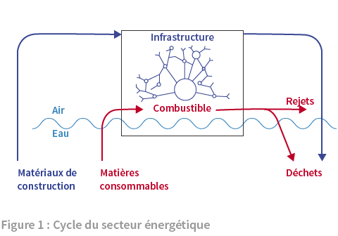
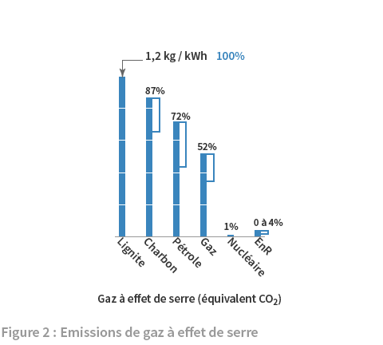
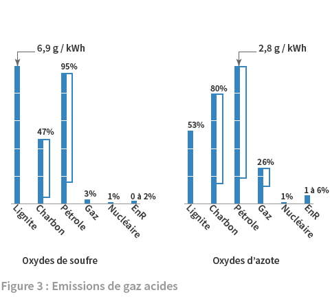
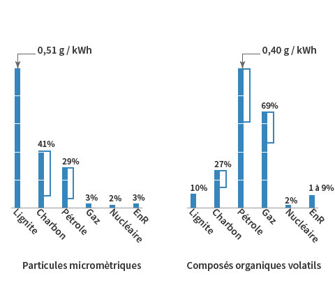
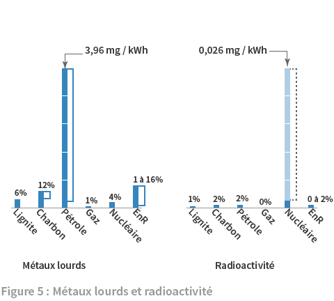
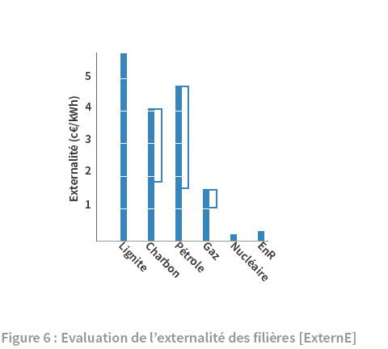
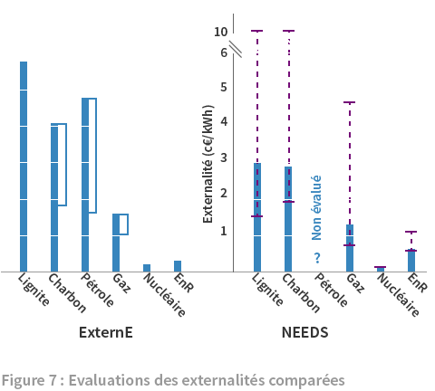

5. Environnement
La production de l’énergie et son utilisation sont inséparables d’impacts environnementaux abordés ici. La Figure 1 situe la question. La production d’énergie nécessite des infrastructures : installations de production, réseaux de transport et de distribution. Pour cela des matériaux sont extraits de l’écorce terrestre, et des procédés (non représentés ici) employés pour la construction de ces infrastructures (métallurgie, cimenterie, BTP). Quand les infrastructures sont obsolètes, leur démontage produit des déchets.
L’infrastructure constitue l’unique impact de certaines énergies renouvelables qui n’ont pas d’autres rejets. Ainsi, pour les énergies solaire, éolienne, hydraulique et bientôt énergies marines, leur impact se limite pratiquement à celui de leur infrastructure et à l’occupation de l’espace qui va de pair. Prélevant leur énergie dans un flux environnant (soleil, air et eau), elles n’ont pas besoin d’autre apport pour fonctionner.

Pour toutes les autres énergies, l’impact vient, en plus de l’infrastructure, de l’approvisionnement en combustible et de sa combustion dans les centrales. Le pétrole et le gaz sont extraits de la croûte terrestre par forages, le charbon par mines souterraines ou à ciel ouvert (lignite). Leur combustion, avec l’oxygène de l’air, donne des produits de combustion qui constituent les polluants des fumées rejetées par la cheminée. Avant rejet, le traitement des fumées permet de retenir une partie des polluants qui peuvent être traités avec les autres produits de combustion solides et liquides dans la filière des déchets.
Le minerai d’uranium est extrait par des mines souterraines ou à ciel ouvert. Après enrichissement, il entre dans la fabrication des assemblages de combustible nucléaire. Une fois utilisés dans une centrale, ceux-ci suivent la filière de traitement des déchets. Le combustible nucléaire est isolé de l’environnement dans son parcours, les rejets de radioactivité des usines et centrales étant encadrés par la règlementation. Les accidents graves enfreignent cette règle. Non considérés ici, ils le seront ultérieurement (de même que pour les autres filières énergétiques).
La présentation des émissions de polluants en fonctionnement normal de la production d’électricité s’appuie sur une recherche européenne chiffrant les externalités des filières, de la mine aux déchets 1. Pour les économistes, une externalité est le coût des effets causés à un tiers (avantage ou dommage) sans contrepartie financière. Dans la production d’électricité, la base physique du calcul de l’externalité est la quantité des polluants émis. C’est elle qui est présentée, le chiffrage des externalités étant présenté sommairement en conclusion. Il faut garder présent à l’esprit que les polluants qui sont examinés apparaissent aussi dans des cycles naturels. Aussi la question est plutôt de savoir de combien le système de l’énergie (ici la production d’électricité) entraîne une augmentation significative des quantités associées à des effets négatifs pour l’environnement et la santé humaine.

La figure 2 présente les émissions de CO2 des différentes filières ; ce gaz est le plus abondant des produits de combustion ; et il est intégralement rejeté dans l’atmosphère puisque son captage éventuel est encore au stade de la recherche et développement 2. L’axe vertical représente la quantité de CO2 émise par kilowattheure d’électricité produite dans les centrales en service, ici en kilogrammes. La quasi totalité des émissions vient, sans surprise, de l’utilisation des combustibles fossiles, le lignite atteignant le maximum avec 1,2 kg/kWh. Le chiffrage porte sur l’ensemble du cycle décrit dans la figure 1 et comprend la fabrication des infrastructures et le transport du combustible. Aussi les EnR et le nucléaire présentent une part faible d’émission.
L’impact du CO2 provient de sa nature de gaz à effet de serre, émis en quantité supérieure à celle du cycle naturel par l’humanité et persistant sur des temps longs dans l’atmosphère, ce qui conduit au réchauffement climatique d’origine anthropique. Des avancées technologiques peuvent amener à une réduction de l’émission dans les filières de production, par exemple centrales à lit fluidisé pour le charbon ou à cycle combiné pour le gaz et le pétrole. Le trait placé sur le côté indique la réduction attendue de ces nouvelles technologies.

Les oxydes de soufre sont produits par la combustion du soufre contenu dans les combustibles solides et liquides. Se diluant facilement dans l’eau, ils sont responsables des pluies acides et de troubles respiratoires. Les émissions se chiffrent en grammes par kilowattheure. Le maximum d’émission est atteint par le lignite avec un taux de 6,9 g/kWh, suivi de près par le pétrole et plus loin par le charbon. Le gaz et les autres sources ont des émissions bien inférieures. Pour les centrales européennes, les normes environnementales ont conduit depuis des décennies au développement et à l’installation de procédés de traitement des fumées. Le smog londonien ou les pluies acides sur la Forêt Noire ne font plus l’actualité. Mais en conséquence, les progrès encore possibles dans ce domaine semblent réduits 3 et la présence même réduite de ces polluants continue à engendrer des troubles respiratoires. Pour atteindre des gains significatifs, sur le fioul comme sur le charbon, il faudrait passer aux nouvelles technologies. Les progrès à en attendre sont indiqués par le trait latéral.
Les oxydes d’azote sont produits par la combustion d’azote contenu dans le combustible ou celui de l’air (à haute température). Comme les oxydes de soufre, il forme un acide en se diluant dans l’eau. Le maximum est atteint par le pétrole avec 2,8 g/kWh suivi du charbon puis du lignite. Le gaz arrive ensuite avec un niveau significatif. Le passage aux nouvelles technologies permettrait de réduire les émissions pour le pétrole, le gaz et le charbon.

Les particules micrométriques (ou fines) sont des résidus solides ou liquides de combustion, dispersés dans l’air. Ces particules causent un problème sanitaire car suivant leur taille, ici moins de 2,5 microns, elles peuvent pénétrer plus ou moins profondément dans l’appareil respiratoire où elles se déposent. La combustion du lignite est le principal émetteur avec un demigramme par kWh, suivi du charbon et ensuite du pétrole. Les nouvelles technologies du charbon et du pétrole sont à nouveau en mesure de réduire significativement les émissions.
Les composés organiques volatils (COV) sont produits surtout par le pétrole avec environ 0,4 g/kWh puis par le gaz. Ces COV entrent dans une réaction chimique avec les oxydes d’azote, excités par le rayonnement ultra-violet et produisent de l’ozone. La couche d’ozone en haute atmosphère protège la vie du rayonnement ultra-violet du soleil. La couche d’ozone de surface, formée par la pollution, est irritante pour les yeux et les voies respiratoires. La circulation routière, non comptabilisée ici, est d’ailleurs le principal émetteur dans les agglomérations.

Les polluants suivants même s’ils sont en quantité très réduite (il s’agit ici de milligrammes par kWh, alors que les deux précédentes se chiffraient en grammes) n’en sont pas moins préoccupants. D’abord il y a les métaux lourds, tels le cadmium ou le mercure, contenus en traces dans les combustibles, dégagés par la combustion et échappant partiellement au traitement des fumées. Le pétrole représente le maximum avec près de 4 mg/kWh suivi de loin par le charbon. Les métaux lourds peuvent aussi être relâchés lors de procédés de fabrication. Pour cette raison, les EnR ont ici une émission significative lors de la fabrication des éoliennes ou des panneaux photovoltaïque. Les nouvelles filières visent à baisser le taux.
Le maximum de la radioactivité se chiffre à moins de 0,03 mg/kWh pour la filière nucléaire. L’essentiel est dû à l’exploitation minière qui libère du radon, un gaz rare radioactif, en même temps qu’elle extrait le minerai. La partie de couleur grise plus claire, marquée par le trait pointillé indique cette proportion, la radioactivité des centrales (gris foncé) représentant moins de 5% du total. A noter que le charbon ou le pétrole présentent aussi une émission de quelques pourcents due à la radioactivité générale des matériaux terrestres.
Ainsi se termine le panorama des différents polluants émis par le secteur énergétique. Une évaluation économique des externalités est faite en [1] en multipliant ces quantités de matière par une estimation des coûts de leurs effets (réchauffement climatique pour le CO2, conséquence sur la santé publique ou la qualité de l’environnement pour les autres polluants). Au terme de ce traitement, une évaluation par filière technologique est donnée et représentée dans la figure 6.

Du calcul des émissions de polluants sur le cycle des filières (figure 2 à 5) au calcul des équivalents monétaires de la pollution des filières (figure 6), la complexité s’accroit en raison de la difficulté à donner un coût représentatif des conséquences des polluants pour l’environnement et la santé humaine, de même qu’à anticiper les gains apportés par les nouvelles filières. Afin de donner un aperçu de l’incertitude qui en résulte, la figure 7 compare aux résultats précédents ceux d’une étude ultérieure faite dans le cadre du projet intégré européen NEEDS (New Energy Externalities Development for Sustainability)4 sur les externalités des filières émergentes de production d’électricité.

Cette étude donne une estimation jugée la plus probable pour les nouvelles technologies en cours d’installation (représentée comme précédemment) ainsi que des estimations haute et basse représentées par les deux traits horizontaux reliés par le tiret vertical. La différence entre les estimations résulte du chiffrage du coût du changement climatique.
Les deux études présentent des résultats cohérents sur les ordres de grandeur des coûts avec les plus fortes externalités pour le lignite et charbon. L’externalité du gaz est chiffrée au tiers environ de ces valeurs. Quant au PV installé sur les toits qui constitue le maximum représenté ici pour les EnR, son externalité se situe au tiers environ de celle du gaz. Les autres EnR (solaire à concentration, éolien, hydraulique) et le nucléaire se situent à moins d’un tiers de cette valeur. L’ordre des externalités est donc grosso modo le suivant, en partant de 1 pour le charbon : 1/3 pour le gaz, 1/9 pour le PV et 1/27 pour les autres EnR et le nucléaire. Les auteurs précisent que pour le nucléaire, leur chiffrage n’intègre pas le coût d’un accident grave éventuel et estiment que celui-ci ne changerait pas significativement leurs résultats sur le surcoût d’externalité par kWh. Nous aurons l’occasion de voir la question des accidents pour le nucléaire et les autres filières dans une page future. Les différences entre les deux études pour le lignite et le charbon, peuvent s’expliquer par le fait que NEEDS donne les chiffres pour les nouvelles centrales mises en service alors qu’ExternE donne les chiffres pour le parc européen existant.
En conclusion, ces études nous éclairent sur l’ensemble des pollutions à considérer pour la production d’électricité et attirent l’attention sur celles qui sont peu communiquées. Aussi, le résultat pour les filières sur le chiffrage des externalités, donne des résultats auxquels on ne s’attend pas forcément. Malgré la difficulté de l’exercice, le fait que deux évaluations aient été faites par des experts venus de toute l’Europe et qu’elles obtiennent des résultats concordants, donne du crédit à leurs résultats. En tous cas, une argumentation plus solide que les opinions diverses qui peuvent circuler sur ces questions. ◊
ExternE-Pol Externalities of energy : extension of accounting framework and policy applications. R. Dones et al. Paul Scherrer Institute, P. Bickel et al., Universität Stuttgart, Final Report on Work Package 6 : New energy technologies. Table 6 : cumulative emissions for current and new technologies for power production systems (after ecoinvent), July 2005. ↑
ibid. table 6 pour les valeurs reprises dans le graphe et les suivants. ↑
ibid table 1 “l’installation de procédés de traitement de fumées plus efficaces réduira quelque peu les externalités” (traduction du rédacteur) ↑
Sixth Framework Programme, NEEDS, Deliverable n° 6.1-RS1a External costs from emerging electricity generation technologies, March 2009. ↑